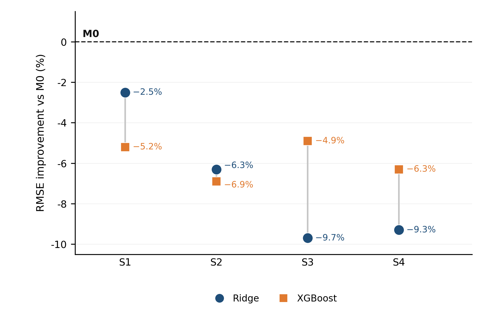
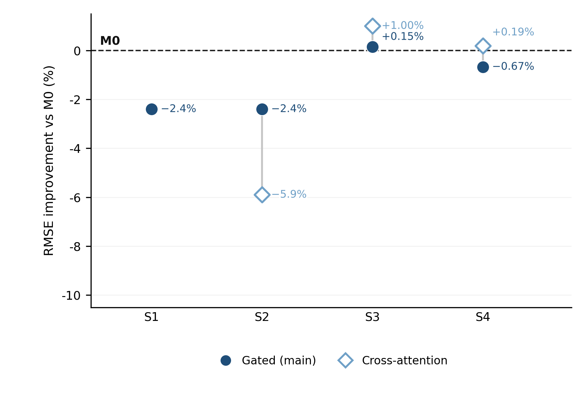
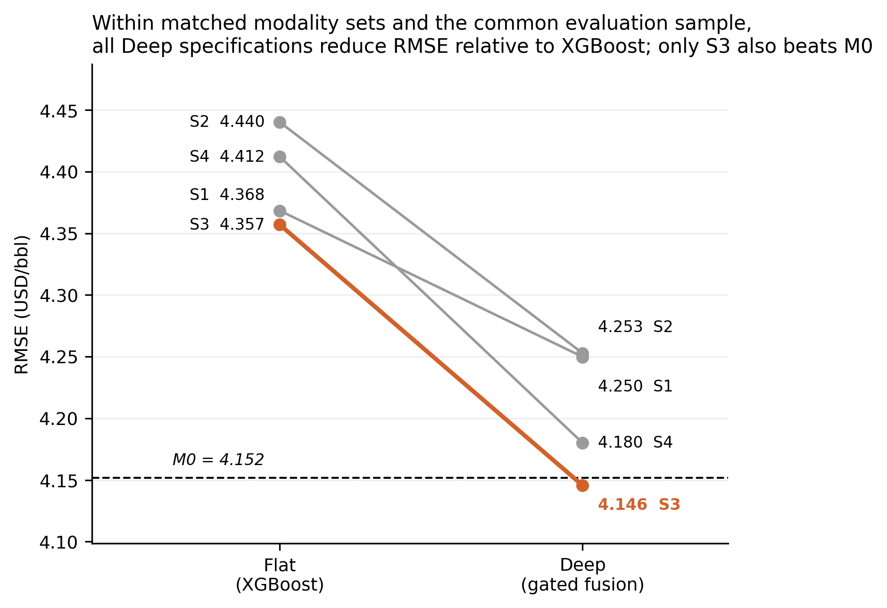
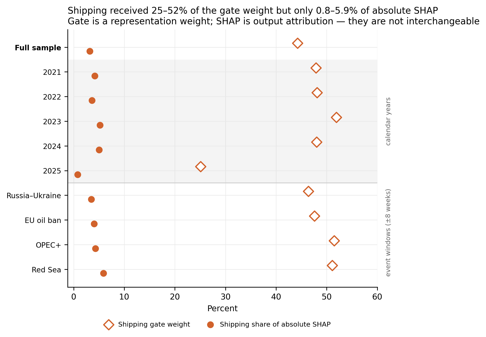
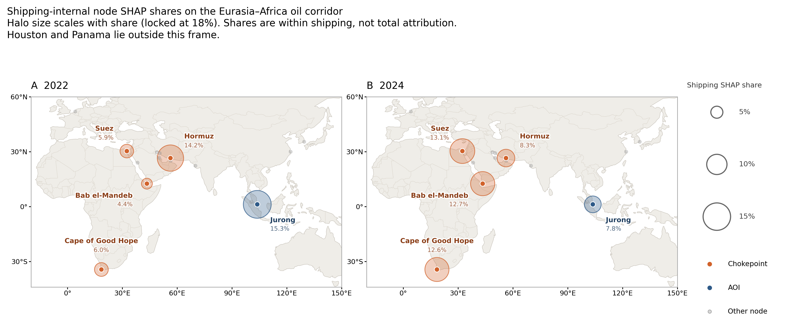

Chapter 4 Results
4.1 Flat-model results
Table 4.1 reports the out-of-sample performance of the Flat Ridge and XGBoost models across feature sets S1–S4, with M0 shown for comparison. All eight Flat models have higher RMSE than M0 and therefore record negative RMSE improvement.
| Set | Variables | Model | RMSE | Improvement vs M0 (%) |
|---|---|---|---|---|
| Benchmark | M0 | 4.152 | ||
| S1 | financial time series | M1-Flat-Ridge | 4.256 | −2.5% |
| M1-Flat-XGB | 4.368 | −5.2% | ||
| S2 | financial time series + RS | M2-Flat-Ridge | 4.414 | −6.3% |
| M2-Flat-XGB | 4.440 | −6.9% | ||
| S3 | financial time series + shipping | M3-Flat-Ridge | 4.553 | −9.7% |
| M3-Flat-XGB | 4.357 | −4.9% | ||
| S4 | financial time series + RS + shipping | M4-Flat-Ridge | 4.539 | −9.3% |
| M4-Flat-XGB | 4.412 | −6.3% |
Note: Positive values indicate lower RMSE than M0.

Figure 4.1: Flat-model RMSE improvement relative to M0. The dashed line denotes zero improvement relative to M0. Positive values indicate lower RMSE than M0.
Figure 4.1 displays the same RMSE improvements as Table 4.1. All eight points lie to the left of the M0 line.
For Ridge, S1 has the lowest RMSE and S3 the highest; adding remote sensing, shipping, or both raises RMSE relative to S1. For XGBoost, S3 records a slightly lower RMSE than S1 (4.357 versus 4.368), while S2 and S4 remain higher than S1. No Flat model records a positive RMSE improvement relative to M0. Overall, the Flat family performs worse than the no-change benchmark across all information sets.
The Flat results therefore provide no evidence of improvement relative to the no-change benchmark. Remote sensing consistently reduces performance for both Ridge and XGBoost. Shipping slightly improves XGBoost relative to S1 but worsens Ridge performance, and in neither case is the improvement sufficient to outperform M0.
4.2 Deep-model results
Table 4.2 reports Deep-model performance across S1–S4. Gated fusion is the prespecified main specification, while cross-attention (XAttn) is reported as a secondary comparison. No cross-attention result is reported for S1 because only the finance encoder is active.
| Set | Variables | Model | RMSE | Improvement vs M0 (%) |
|---|---|---|---|---|
| Benchmark | M0 | 4.152 | ||
| S1 | financial time series | M1-Deep | 4.250 | −2.4% |
| S2 | financial time series + RS | M2-Deep-Gated | 4.253 | −2.4% |
| M2-Deep-XAttn | 4.396 | −5.9% | ||
| S3 | financial time series + shipping | M3-Deep-Gated | 4.146 | +0.15% |
| M3-Deep-XAttn | 4.110 | +1.00% | ||
| S4 | financial time series + RS + shipping | M4-Deep-Gated | 4.180 | −0.67% |
| M4-Deep-XAttn | 4.144 | +0.19% |
Note: XAttn denotes cross-attention. Positive values indicate lower RMSE than M0.

Figure 4.2: Deep-model RMSE improvement relative to M0. Filled markers denote the prespecified gated specification; hollow markers denote the secondary cross-attention comparison. The dashed line denotes zero improvement relative to M0. Positive values indicate lower RMSE than M0. S1 shows only the finance-only gated specification; no cross-attention result is available because only the finance encoder is active.
Figure 4.2 shows the same RMSE improvements as Table 4.2. In S2, cross-attention is worse than gated fusion. In S3 both models cross M0, and cross-attention records the larger improvement. In S4 only cross-attention is slightly better than M0. Gated S3 is the only prespecified main specification with a positive improvement.
The gated S1 and S2 models record similar RMSE of 4.250 and 4.253, both higher than that of M0. Adding remote sensing therefore provides no descriptive improvement. Neither reported fusion approach reduces RMSE relative to the finance-only Deep model at S2. With shipping included, gated S3 records the lowest RMSE among the gated models at 4.146, improving on M0 by 0.15%. Gated S4 rises to 4.180, 0.67% worse than M0, indicating that adding remote sensing to S3 does not provide a further improvement.
On the reported seed-42 run, cross-attention has a higher RMSE than gated fusion at S2, at 4.396 compared with 4.253, but lower RMSEs at S3 and S4. Cross-attention records RMSEs of 4.110 and 4.144 at S3 and S4, corresponding to RMSE improvements of 1.00% and 0.19%. These results are therefore reported only as descriptive secondary comparisons and do not provide evidence that cross-attention is superior.
Overall, the Deep family performs better than the Flat family, although most Deep specifications still do not outperform M0. For RQ1, shipping provides the clearest improvement. S3 achieves the best performance under both gated fusion and cross-attention, and both models outperform M0 in the reported run. Remote sensing provides little additional value. It does not improve the finance-only model at S2 and weakens the gated model when added to shipping at S4.
4.3 Flat versus Deep
Table 4.3 compares the main Deep model with both Flat models within each feature set. The feature-set category, forecast dates and evaluation sample are held constant. The main Deep pathway uses the finance-only Deep model at S1 and gated fusion at S2–S4.
| Feature set | Flat model | Flat RMSE | Deep model | Deep RMSE | Deep vs Flat (%) |
|---|---|---|---|---|---|
| S1 | Ridge | 4.256 | M1–Deep | 4.250 | +0.15% |
| S1 | M1–Flat–XGB | 4.368 | M1–Deep | 4.250 | +2.71% |
| S2 | M2–Flat–Ridge | 4.414 | M2–Deep–Gated | 4.253 | +3.64% |
| S2 | M2–Flat–XGB | 4.440 | M2–Deep–Gated | 4.253 | +4.22% |
| S3 | M3–Flat–Ridge | 4.553 | M3–Deep–Gated | 4.146 | +8.95% |
| S3 | M3–Flat–XGB | 4.357 | M3–Deep–Gated | 4.146 | +4.85% |
| S4 | M4–Flat–Ridge | 4.539 | M4–Deep–Gated | 4.180 | +7.90% |
| S4 | M4–Flat–XGB | 4.412 | M4–Deep–Gated | 4.180 | +5.26% |
Note: Positive values indicate a lower Deep RMSE than the matched Flat model.

Figure 4.3: Change in out-of-sample price RMSE from flat XGBoost to gated Deep models. All results use the common 257-week evaluation sample. The dashed line marks the M0 no-change benchmark. S1 is included as a modelling-path reference, while the modality-matched comparisons relevant to RQ2 are S2–S4.
Across all four feature sets, the main Deep model records lower RMSE than both Ridge and XGBoost. The reduction ranges from 0.15% against Ridge at S1 to 8.95% against Ridge at S3. At S1 and S2, the main Deep models improve on both Flat learners but remain worse than M0. S3 is the only feature set which has lower RMSE than M0. Although the main Deep S4 model improves substantially over both Flat models, it remains worse than M0 and does not improve on the main Deep S3 model.
Overall, these comparisons show that the main Deep pathway records lower RMSE than both Flat learners across all four feature sets. For RQ2, this provides consistent evidence that modality-aware representation-level modelling performs better than flat feature fusion when using matched modality sets. However, because the Deep and Flat pathways also differ in model architecture and data representation, the improvement cannot be attributed to representation-level fusion alone. Nevertheless, the comparison suggests that how heterogeneous data are organised and represented may affect the extent to which different information is retained and used by the model, and that preserving the distinct structure and characteristics of different data types may be valuable for future research.
4.4 Interpretability
Following the eligibility rule in Section 3.7.2, interpretation is reported for the gated Deep model on S3. Table 4.4 combines period-specific forecast performance, modality-gate weights and absolute SHAP attribution for the 257 forecast origins.
| Period | n | RMSE | Improvement vs M0 (%) | Gate finance | Gate shipping | SHAP finance | SHAP shipping |
|---|---|---|---|---|---|---|---|
| Full sample | 257 | 4.146 | +0.15% | 0.558 | 0.442 | 96.8% | 3.2% |
| 2021 | 50 | 3.014 | −1.98% | 0.521 | 0.479 | 95.8% | 4.2% |
| 2022 | 52 | 6.613 | +0.77% | 0.519 | 0.481 | 96.4% | 3.6% |
| 2023 | 52 | 3.790 | −0.37% | 0.481 | 0.519 | 94.8% | 5.2% |
| 2024 | 52 | 3.083 | −0.79% | 0.520 | 0.480 | 95.0% | 5.0% |
| 2025 | 51 | 2.960 | +0.99% | 0.749 | 0.251 | 99.2% | 0.8% |
| Russia–Ukraine | 16 | 8.822 | +1.15% | 0.536 | 0.464 | 96.5% | 3.5% |
| EU oil ban | 16 | 5.059 | −0.21% | 0.524 | 0.476 | 96.0% | 4.0% |
| OPEC+ | 16 | 4.358 | +0.76% | 0.485 | 0.515 | 95.7% | 4.3% |
| Red Sea | 16 | 3.265 | +2.55% | 0.489 | 0.511 | 94.1% | 5.9% |
Note: RMSE is evaluated in price levels, while SHAP attributes predicted log returns. Event windows are ±8 weeks.

Figure 4.4: Shipping gate weights and shipping shares of absolute SHAP for the full sample, calendar years and ±8-week event windows, gated Deep S3. Finance values are omitted because they equal 100% minus the corresponding shipping values. Gate weights and SHAP shares are not interchangeable.
Financial inputs dominate absolute SHAP throughout the sample, accounting for 96.8% of full-sample attribution compared with 3.2% for shipping. Shipping attribution is relatively higher in 2023–2024 and during the Red Sea window, at between 5.0% and 5.9%, but falls to 0.8% in 2025. Its contribution is therefore small and episodic rather than persistently elevated.
The main-run gate allocates average weights of 55.8% to finance and 44.2% to shipping, a substantially more balanced division than the SHAP attribution. Figure 4.4 isolates this contrast for shipping: the gate assigns it a representation weight of about 25–52%, while its realised share of absolute SHAP remains 0.8–5.9%. The two quantities are not interchangeable; SHAP is therefore used as the primary basis for interpreting RQ3.
At the input-group level, EIA variables provide the largest full-sample contribution at 43.6%, followed by financial and macroeconomic variables at 31.4%. All twenty highest-ranked individual features are financial inputs, led by crude production, Cushing stocks and the federal funds rate. No shipping subgroup contributes more than 2.0% in any reported period, although PortWatch and SAR become modestly more prominent during the Red Sea window.
Within the shipping representation, the highest full-sample node shares belong to Jurong, Hormuz, Suez, the Cape route and Bab el-Mandeb. Jurong and Hormuz lead the rankings from 2021 to 2023, while Suez, Bab el-Mandeb and the Cape route occupy the first three positions in 2024. Figure 4.5 shows this shift for 2022 and 2024, the two calendar years with the largest node-share reallocation. Figure 4.6 tracks the same within-shipping shares through time. During the ±8-week Red Sea window, the largest trailing six-week mean of any node’s within-shipping share was 14.0% (Suez). These shares are normalised within the shipping modality and do not represent each node’s share of total-model attribution.

Figure 4.5: Node-level shipping SHAP shares for 2022 and 2024, the two calendar years with the largest geographic reallocation of shipping attribution. Halo area is proportional to the share of shipping attribution (locked scale of 18%). Other nodes are shown as fixed-size grey dots.
![Trailing six-week mean of each node’s share of absolute SHAP within the shipping modality, gated Deep S3. Chokepoint nodes appear above AOI nodes; within each group, nodes are ordered by full-sample within-shipping share (high to low). These shares are normalised within the shipping modality and do not represent each node’s share of total-model attribution. The colour scale is locked at 18%, matching Figure 4.5. Grey bands mark ±8-week event windows: Russia–Ukraine (24 February 2022), EU oil ban (1 June 2022), OPEC+ (2 April 2023) and Red Sea (19 November 2023). During the Red Sea window, the largest smoothed within-shipping node share was 14.0% (Suez). Light-grey cells at the start of the sample are undefined trailing means (fewer than six weeks of history).](../../05_outputs/figures/fig_4_5_node_shap_heatmap.png)
Figure 4.6: Trailing six-week mean of each node’s share of absolute SHAP within the shipping modality, gated Deep S3. Chokepoint nodes appear above AOI nodes; within each group, nodes are ordered by full-sample within-shipping share (high to low). These shares are normalised within the shipping modality and do not represent each node’s share of total-model attribution. The colour scale is locked at 18%, matching Figure 4.5. Grey bands mark ±8-week event windows: Russia–Ukraine (24 February 2022), EU oil ban (1 June 2022), OPEC+ (2 April 2023) and Red Sea (19 November 2023). During the Red Sea window, the largest smoothed within-shipping node share was 14.0% (Suez). Light-grey cells at the start of the sample are undefined trailing means (fewer than six weeks of history).
For RQ3, the model relies predominantly on financial information across all market conditions. Shipping provides a much smaller and more episodic contribution, becoming relatively more important in some periods of market and trade disruption, particularly in 2023–2024 and during the Red Sea event window. Its geographic focus also shifts over time across major ports and chokepoints rather than remaining concentrated in one location. Overall, the results suggest that financial data provide the model’s core predictive information, while shipping data act as a supplementary source whose importance increases under particular market conditions.
4.5 Robustness
Table 4.5 reports the results of rerunning all Deep specifications with multiple random seeds.
| Set | Model | Main-run improvement | Across-run mean ± SD | Positive runs |
|---|---|---|---|---|
| S1 | M1-Deep | −2.36% | −1.00% ± 1.33 | 1/3 |
| S2 | M2-Deep-Gated | −2.43% | −3.15% ± 1.67 | 0/3 |
| M2-Deep-Concat | −2.01% | −1.79% ± 0.77 | 0/3 | |
| M2-Deep-XAttn | −5.87% | −3.57% ± 2.77 | 0/3 | |
| S3 | M3-Deep-Gated | +0.15% | −0.51% ± 0.80 | 1/3 |
| M3-Deep-Concat | −0.22% | −0.27% ± 0.35 | 1/3 | |
| M3-Deep-XAttn | +1.00% | −3.01% ± 4.07 | 1/3 | |
| S4 | M4-Deep-Gated | −0.68% | −0.91% ± 0.26 | 0/3 |
| M4-Deep-Concat | −8.30% | −3.79% ± 3.95 | 0/3 | |
| M4-Deep-XAttn | +0.19% | −1.90% ± 2.75 | 1/3 |
Note: The main-run column is the seed-42 result reported in Tables 4.2–4.4. S1 has no fusion operator. XAttn denotes cross-attention. Individual seeds are shown in Appendix B (Figure 6.1).
None of the models achieves a positive mean RMSE improvement relative to M0 across runs, and only five of the thirty individual runs are positive. No S2 fusion is positive in any seed. S3 concatenation has the best mean result, but it is still negative at −0.27%, while the main gated S3 model records −0.51%. Across seeds the S3 order reverses: concatenation (−0.27%) remains closest to M0, ahead of gated (−0.51%) and cross-attention (−3.01%). Gated S3 also outperforms S1 in only one of the three matched runs. The positive improvements observed in the main run are therefore sensitive to random initialisation. Gated fusion remains the main specification because it supplies modality weights for RQ3, not because it is the more accurate operator. Overall, although the Deep models do not consistently outperform M0, some specifications, particularly S3, show predictive potential and merit further investigation. The better-performing Deep specifications remain broadly close to M0 rather than demonstrating a consistent forecasting advantage.